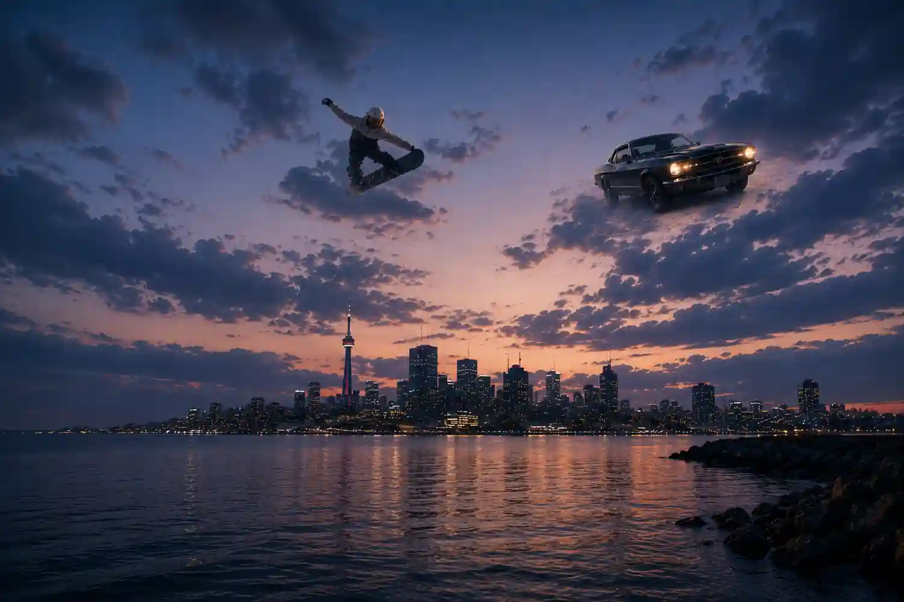
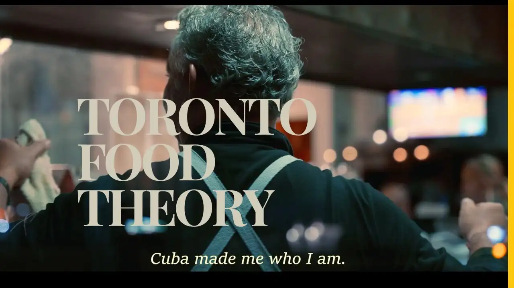
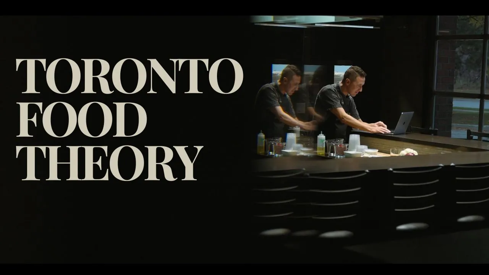
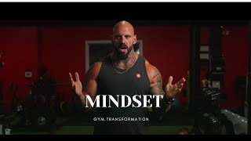
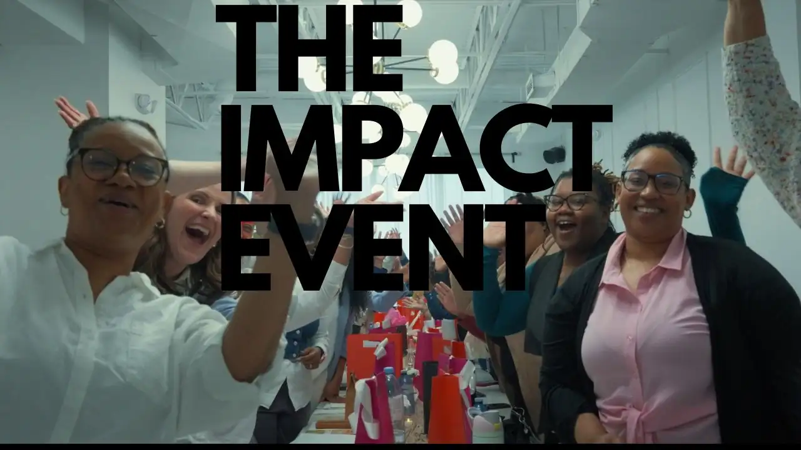
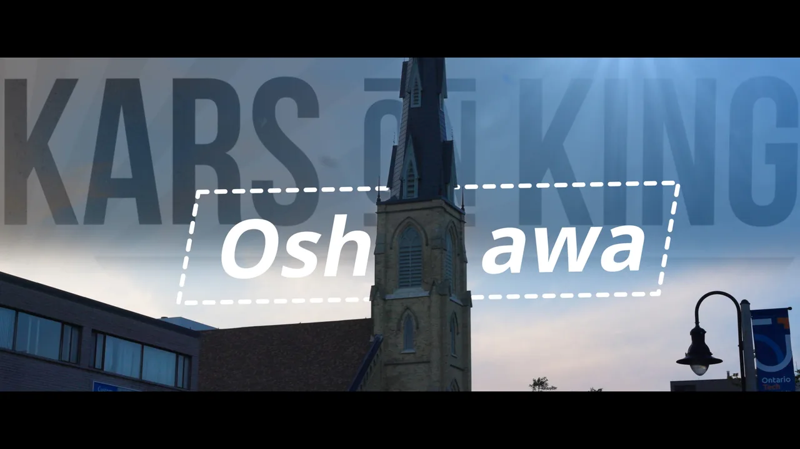
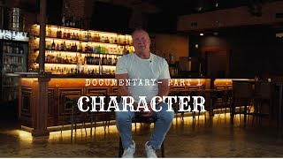

SELECTED WORKS

Web Series
Documentary

Web Series
Visual Piece

Commercial

Documentary

Visual Story

Documentary
Brand Film







A quiet record of brands, people, and projects shaped through film, photography, and visual storytelling.
About
I’m Akhil Johny, a Toronto-based visual storyteller who believes every story deserves to be heard.
I craft authentic narratives that move people, create genuine connection, and bring visions to life.
Working alongside my clients, I grow with every project — transforming ideas into stories that truly resonate with their audience.
For Films, Stories & Collaborations